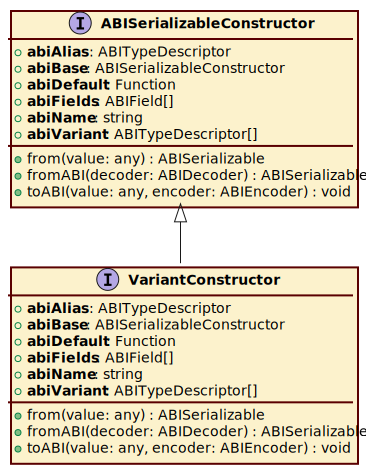

Interface VariantConstructor
interface VariantConstructor {
new VariantConstructornew <T>(...args): T;
abiAlias?: ABITypeDescriptor;
abiBase?: ABISerializableConstructor;
abiDefault?: (() => ABISerializable);
abiFields?: ABIField[];
abiName: string;
abiVariant?: ABITypeDescriptor[];
from(value): ABISerializable;
fromABI?(decoder): ABISerializable;
toABI?(value, encoder): void;
}
new VariantConstructornew <T>(...args): T;
abiAlias?: ABITypeDescriptor;
abiBase?: ABISerializableConstructor;
abiDefault?: (() => ABISerializable);
abiFields?: ABIField[];
abiName: string;
abiVariant?: ABITypeDescriptor[];
from(value): ABISerializable;
fromABI?(decoder): ABISerializable;
toABI?(value, encoder): void;
}
Hierarchy-Diagram
{kind=link}
Legend
 interface
interface
 public method
public method
Hierarchy (view full)
- ABISerializableConstructor
- VariantConstructor
Index
Constructors
Properties
Methods
Constructors
constructor
Properties
Optional abi
abi
Optional abi
For structs, the base class this type extends.
Optional abi
Return value to use when creating a new instance of this type, used when decoding binary extensions.
Type declaration
- (): ABISerializable
Returns ABISerializable
Optional abi
abi
For structs, the fields that this type contains.
abi
abi
Name of the type, e.g. asset.
Optional abi
abi
For variants, the different types this type can represent.
Methods
from
- from(value): ABISerializable
Create new instance from JavaScript object. Should also accept an instance of itself and return that unchanged.
Parameters
- value: any
Returns ABISerializable
Optional fromABI
- fromABI(decoder): ABISerializable
Create instance from binary ABI data.
Parameters
- decoder: ABIDecoder
Decoder instance to read from.
Returns ABISerializable
- decoder: ABIDecoder
Optional toABI
- toABI(value, encoder): void
Static ABI encoding can be used to encode non-class types. Will be used in favor of instance.toABI if both exists.
Parameters
- value: any
The value to encode.
- encoder: ABIEncoder
The encoder to write the value to.
Returns void
- value: any
Alias to another type.